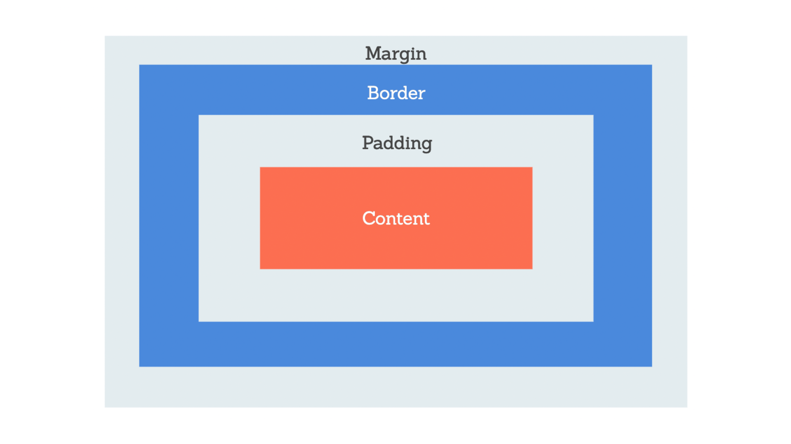

Pre-work Study Guide

✨ Open the Console to See What's Happening ✨
HTML
- Hypertext Markup Language (HTML) is used to create the structure of a webpage.
- Search engine optimization (SEO) is the process of improving the ranking of a website in search engines such as Google or Bing. Better SEO results in your website more frequently showing up in searches.
- The words “element” and “tag” are commonly used interchangeably in the web development world, but it is important to know the difference. An element refers to the entire element from opening tag to closing tag, whereas a tag refers only to what appears inside the angle brackets.
- semantic HTML elements, the name of the element describes its content and the role it plays on a webpage.
- The style element defines the CSS styles associated with a website.
- The base element defines the base URL for a webpage.
- The link element connects an external resource to the HTML document.
- The meta element defines metadata such as the character set, description, keywords, author, and viewport.
Metadata is typically not seen by users, but it contains important information about accessibility, search engines, and performance.
CSS
- Cascading Style Sheets (CSS) a programming language to define how webpage content is presented to users.
- Separation of concerns is a widely used term in web development and refers to separating code into different files based on use
- Declarations contain two important components: the CSS property we want to apply and the value of the property.
- CSS rule

- CSS box model

Git
- git status: checks what branch we are currently on
- git checkout -b branch-name: creates a new branch and switches to it
JavaScript
- JavaScript is the tool that takes a static HTML/CSS webpage and makes it interactive.
- JavaScript is case sensitive
- Right-click anywhere in the browser window and select "Inspect" from the menu. Click the Console tab